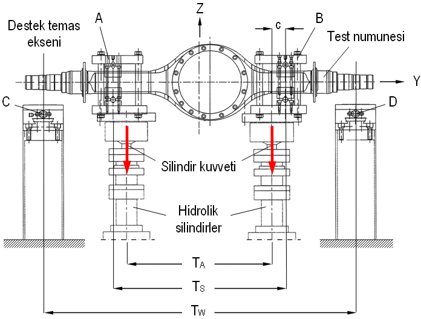
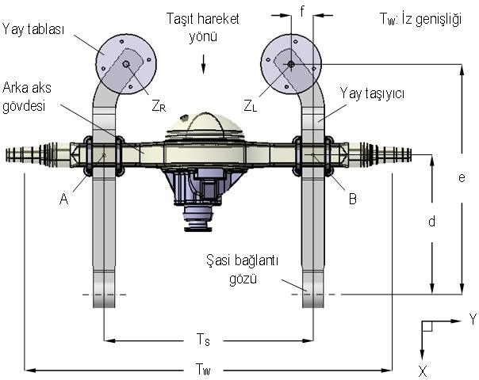
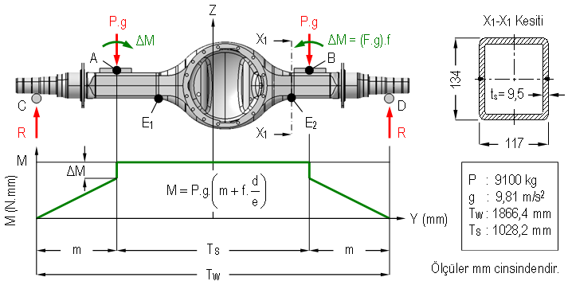
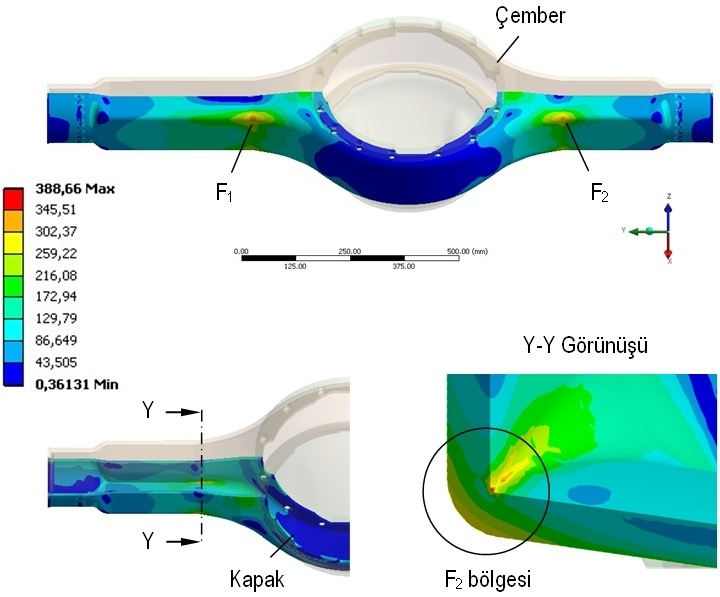

|
2.2. Gövde malzemesi özelliklerinin belirlenmesi
Üst ve alt kabuk, ts= 9,5 mm kalýnlýðýnda S460N (Malzeme numarasý: 1.8901) sac malzemesinden, preste sýcak olarak þekillendirilmektedir. Malzemenin kimyasal özellikleri Tablo 1'de verilmektedir [3]. Anýlan malzemenin iþlenmemiþ durumdaki mekanik özellikleri literatürden elde edilebilmektedir [4; 5]. Bununla birlikte, þekillendirme öncesinde sac levha 800ºC'ye kadar ýsýtýlmakta, presleme sýrasýnda malzemenin sýcaklýðý 700-750°C aralýðýnda bulunmaktadýr. Anýlan ýsýl ve mekanik iþlemler nedeniyle, malzemenin mekanik özelliklerinde ortaya çýkacak deðiþikliklerin sonlu elemanlar analizinde dikkate alýnabilmesi için üretimi tamamlanmýþ gövde örnekleri üzerinden toplam beþ adet numune çýkarýlarak çekme deneyleri gerçekleþtirilmiþtir. Deneylerden elde edilen akma sýnýrý Sy, çekme dayanýmý Sut, ve kopma uzamasý  maks deðerleri Tablo 2'de verilmektedir. Sonlu elemanlar analizinde kullanýlan bu sonuçlar, yapýlan beþ adet deneyden elde edilen en düþük deðerlerdir. maks deðerleri Tablo 2'de verilmektedir. Sonlu elemanlar analizinde kullanýlan bu sonuçlar, yapýlan beþ adet deneyden elde edilen en düþük deðerlerdir.
Tablo 1. S460N malzemesinin kimyasal bileþimi (% aðýrlýk olarak) [3]
Standart |
C
maks. |
Si
maks |
Mn |
P
maks. |
S
maks. |
Al
min. |
Cr
maks. |
Cu
maks. |
Mo
maks. |
Nb
maks. |
Ni
maks. |
Ti
maks. |
V
maks. |
N
maks. |
DIN EN 10025-3 |
0,19 |
0.60 |
1,40-1,70 |
0,020 |
0,010 |
0,02 |
0,10 |
0,10 |
0,08 |
0,05 |
0,40 |
0,03 |
0,15 |
0,012 |
Tablo 2. Çekme deneyi sonuçlarý
Malzeme |
E (GPa) |
v |
Sy (MPa) |
Sut (MPa) |
maks (%) |
S460N (1.8901) |
208,5 |
0,3 |
497,5 |
629,9 |
26,8 |
2.3. Yükleme modeli
Sonlu elemanlar modeline uygulanan yükleme, düþey yorulma testlerinde kullanýlan yük deðerleri üzerinden belirlenmiþtir. Testler, Þekil 7'de prensip þemasý görülen 80 ton kapasiteli bir test standýnda gerçekleþtirilmiþtir. Sistem, ayarlanabilir yüklemeye olanak saðlayan elektronik kumandalý iki hidrolik silindir ile tekerlek temas noktalarýný temsil eden ve açýklýðý aksýn iz geniþliði TW'ye eþit C ve D desteklerinden oluþmaktadýr. Silindirler, gerçek konstrüksiyonda semerlerin monte edildiði A ve B noktalarýna baðlanmaktadýr. Gövde Þekil 8'de görülen ve iki adet hava yayýyla desteklenmiþ arka aks konstrüksiyonunda uygulanacaktýr. Sistemde kullanýlan yay taþýyýcýnýn eksenden kaçýk yükleme geometrisi nedeniyle, gövde üzerinde yay yükü ile orantýlý ilave bir eðilme momenti (M) meydana gelmektedir. Testlerde bu momenti numunelere uygulamak için, hidrolik silindirler aks kollarýna Þekil 7'de görüldüðü gibi eksenden c mesafesi kadar kaçýk yerleþtirilmiþtir. Anýlan mesafe, Þekil 8'de görülen geometriden yararlanýlarak 50,5 mm olarak hesaplanmýþtýr. Arka aks için nominal tasarým yükü yay baþýna F= 2850 kg olarak verilmektedir. Hava yaylarýnýn monte edildiði tablalara ZR ve ZL noktalarýndan düþey doðrultuda etkiyen bu yük, gövde üzerinde A ve B baðlantý noktalarýnda P= 4550 kg'lýk bir statik reaksiyon oluþturmaktadýr. Yol düzgünsüzlükleri nedeniyle taþýtýn yaylandýrýlmýþ kütlesinde meydana gelecek düþey ivmelenme, bu yükü iki kata kadar çýkarabilmektedir.

Þekil 7. Düþey yorulma testinin þemasý

Þekil 8. Yay taþýyýcýnýn yükleme geometrisi
RecurDyn® ticari yazýlýmý kullanýlarak hazýrlanan bir dinamik taþýt simülasyonu üzerinden, semer baðlantýlarýndaki düþey yükün engebeli yol koþullarýnda 182 - 9100 kg aralýðýnda deðiþtiði belirlenmiþtir. Düþey yorulma testlerinde uygulanan yük, bu aralýkta periyodik olarak deðiþtirilmiþtir. En yüksek zorlanma durumunu simüle etmek için sonlu elemanlar analizinde gövdeye, testlerde kullanýlan 9100 kg'lýk maksimum düþey yük ve bunun oluþturduðu ilave eðilme momenti uygulanmýþtýr. Aks gövdesinin kaynak [6]'da verilen örnek model üzerinden, M de dikkate alýnarak hazýrlanan düþey yükleme modeli Þekil 9'da görülmektedir.

Þekil 9. Gövdenin eðilme momenti diyagramý
2.4. Sonlu elemanlar analizi
P ve M modele baðlantý semeri montaj noktalarýndan, Þekil 9 esas alýnarak uygulanmýþtýr. Gövdenin gerilme analizi, 1,86 GHz Intel quad-core Xeon iþlemcili HP xw8400 Workstation yardýmýyla, ANSYS® Workbench V11.0 sonlu elemanlar paketi kullanýlarak gerçekleþtirilmiþtir. Malzemenin davranýþý izotropik olarak tanýmlanmýþtýr. Analizlerde, gövde kolu - diferansiyel yataðý geçiþinde; F1 ve F2 bölgelerinde gerilme yýðýlmalarý oluþtuðu belirlenmiþtir. Nominal tasarým yükü P= 4550 kg için yapýlan analizde maksimum von Mises gerilmesi maks= 194,33 MPa ve statik yükleme durumundaki emniyet katsayýsý n= 2,57 olarak hesaplanmýþtýr. Taþýt simülasyonundan elde edilen P= 9100 kg'lýk maksimum yük yay taþýyýcý semerine statik olarak uygulandýðýnda, maks= 388,7 MPa ve n= 1,28 deðerleri elde edilmiþtir. Literatürde statik yükleme için minimum emniyet katsayýsý n= 1,2 olarak önerildiðinden, gövdenin statik mukavemet bakýmýndan yeterli olduðu söylenebilir [7]. Maksimum yükleme için alt kabuktaki eþdeðer von Mises gerilmesi daðýlýmý Þekil 10'da verilmektedir. Gerilme yýðýlma bölgeleri ile testler sýrasýnda ortaya çýkan yorulma hasarýnýn gövde üzerindeki konumlarý Þekil 11'de karþýlaþtýrýlmaktadýr.

Þekil 10. Gövde alt yarýmýnda gerilme daðýlýmý
|